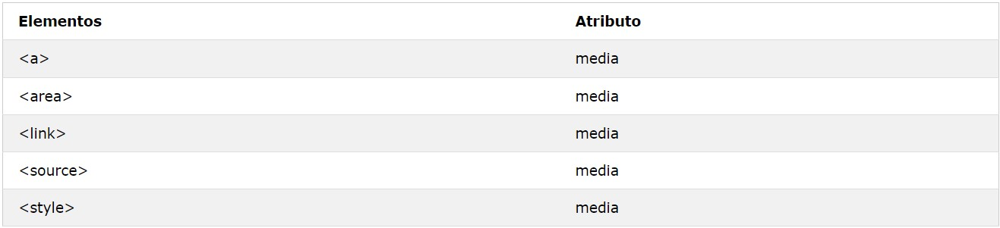
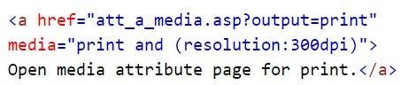
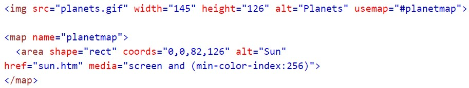
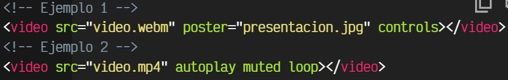

MEDIA HTML
Definición y Uso
La media atributo especifica qué dispositivo / medio el documento vinculado está optimizado para.
Este atributo se utiliza para especificar que la dirección URL de destino
está diseñado para dispositivos especiales (como el iPhone), el habla o los medios impresos.
Este atributo puede aceptar varios valores.
Se aplica a
media atributo se puede usar en los siguientes elementos:

EJEMPLOS
Un enlace con una media de atributos:

Abrir el link para ir a la pagina
Area Ejemplo
Una imagen-mapa, con un área seleccionable:

ㅤㅤㅤㅤㅤ
Video ejemplo
Ejemplos básicos para colocar videos en nuestra página:

HTML <video> Video con controles
Cómo funciona?
controlsatributo agrega controles de video, como reproducción, pausa y volumen.
Es una buena idea incluir siempre widthy heightatributos. Si no se configuran la altura y el ancho,
la página puede parpadear mientras se carga el video. El <source >elemento le permite especificar
archivos de video alternativos que el navegador puede elegir. El navegador utilizará el primer formato reconocido.
El texto entre las etiquetas <video >y </video >solo se mostrará en navegadores que no admitan el <video >elemento.
Ejemplo de video con link